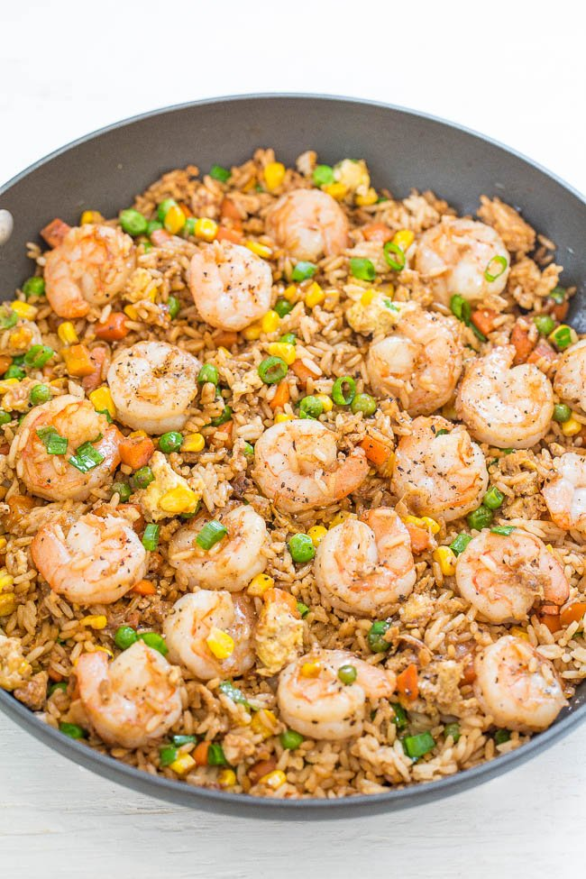

Odin Recipes
Rice with Shrimp

Description
A Neapolitan classic, it's rumored that the name puttanesca comes from the brothels in the Spanish Quarters (lady of the night is puttana in Italian). Linguine with tomatoes, anchovies, and chili pepper give a kick to this dish with a scandalous name.
Ingredients
- Sesame oil
- Vegetable oil
- Fresh shrimp
- Frozen peas and carrots
- Frozen corn
- garlic
- Gound ginger
- Eggs
- Cooked rice
- Green onions
- Low-sodium soy sauce
- Salt and pepper
How to Make Shrimp Fried Rice
- To a large non-stick skillet, add the oils, shrimp, and cook over medium-high heat for about 3 minutes, flipping halfway through.
- Remove the shrimp with a slotted spoon and place on a plate; set aside.
- Add the peas, carrots, corn, and cook for about 2 minutes, or until vegetables begin to soften, stir intermittently.
- Add the garlic, ginger, and cook until fragrant.
- Push the vegetables to one side of the skillet, add the eggs to the other side, and cook to scramble.
- Add the shrimp, rice, and green onions to the pan. Evenly drizzle with soy sauce and stir to combine
- Cook just until the shrimp are reheated.